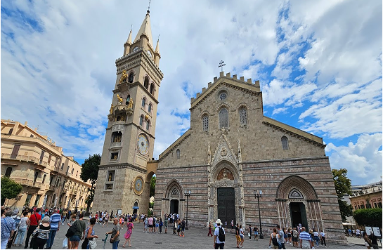
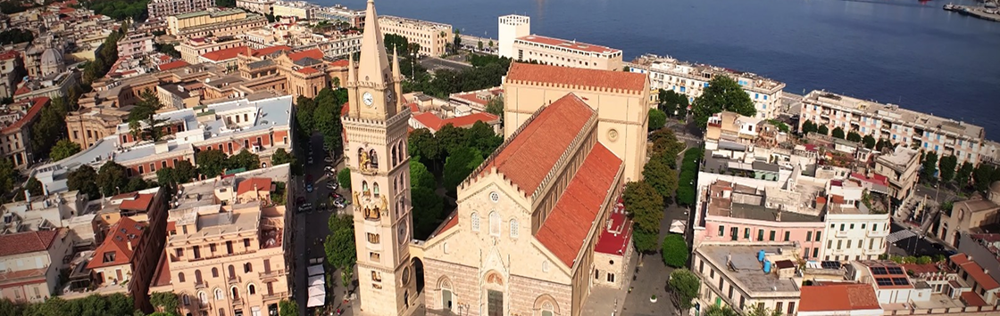
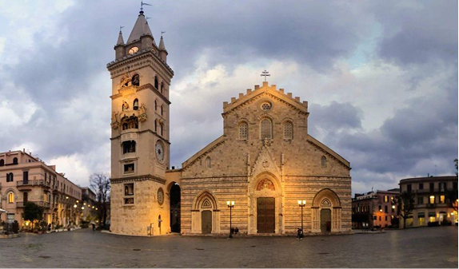
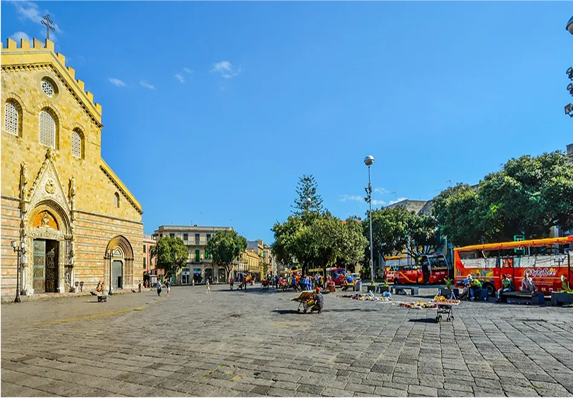

Il cuore storico di Messina
Piazza del Duomo è la piazza più suggestiva di Messina, considerata il vero cuore storico della città. Collocata nel centro urbano, la piazza è dominata dalla imponente Duomo di Messina, una cattedrale di origine normanna, che ha attraversato secoli di restauri.
Al centro della piazza si trova la Fontana di Orione, un capolavoro realizzato nel XVI secolo che rappresenta allegoricamente i quattro grandi fiumi del mondo antico. Davanti alla facciata del Duomo svetta anche il Monumento alla Madonna Immacolata, spostato qui nel XIX secolo.

L’orologio astronomico
Uno degli elementi più affascinanti della piazza è il campanile con il suo orologio astronomico, considerato tra i più grandi e complessi al mondo. Ogni giorno a mezzogiorno le statue automatiche si animano in un suggestivo spettacolo meccanico.
Piazza del Duomo uno spazio vivo e aperto, frequentato da residenti e turisti, ideale per passeggiare o ammirare l’architettura che unisce elementi medievali e moderni, dove passato e presente si incontrano.

Eventi e manifestazioni
La piazza ospita regolarmente eventi culturali, concerti e celebrazioni religiose, come la festa della Madonna della Lettera, patrona della città. Queste manifestazioni rendono la piazza un luogo dinamico.
Passeggiare nella piazza significa fare un viaggio nel tempo: dal Duomo normanno e dall’orologio astronomico, alle costruzioni ottocentesche circostanti, fino alle attività moderne che animano l’area.
